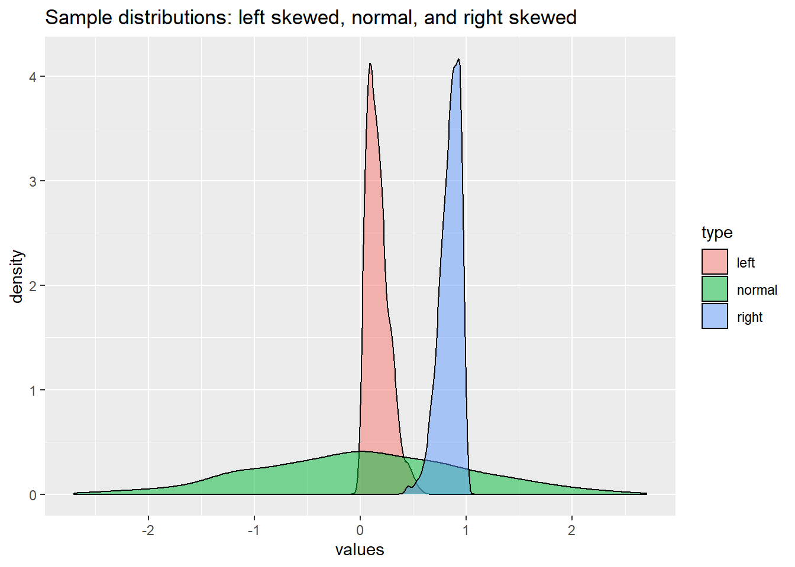

Formatting Inline Code and Reporting \(p\)
R Markdown
how-to
This how-to explores some issues with formatting text called by R Markdown’s ability to include inline code. Topics covered include conditional formatting of numbers by means of knitr hooks as well as strategies for reporting really small \(p\) values
Introduction
One of the advantages of writing in R Markdown is the ability to use inline code, particularly to call up and report a variable produced through analysis. This feature is especially useful when data need to be updated and values in the text change. Rather than re-copying the values in the text when analysis is refined, with inline code the results of the calculations update when the functions are altered or applied to the modified data set. While this is wonderful, it is often necessary to format numbers in particular ways. For example, APA style calls for “commas between groups of three digits” with some exceptions for things like “page numbers, binary digits, serial numbers, degrees of temperature, degrees of freedom, and acoustic frequencies above 1000.”

Formatting inline numbers in R markdown can seem tricky, perhaps leading one to fall back on repetitive or “hacky” solutions. However, R is an opinionated language; so while there is more than one way to format inline numbers, some approaches are better than others. In the past, I often formatted the number inline by wrapping the round() function around whatever value I’m calling. I did this individually on a variable by variable basis which is unnecessarily repetitive and prone to breaking. It also makes for longer inline code which has harder to “read through.” Fortunately, there is a better way!
Recently, from Pat Schloss’s Code Club Ep 63, I learned about both the format() function and the use of knitr::knit_hooks$set(inline=SOME_FUNCTION). Using format() with kinter hooks is far superior to my prior repetitive and hacky approach to formatting inline values. format() strikes me as the correct way to present inline numbers because it does not change the value of the variable–which round() does. Whether done inline or using hooks, it is a simple matter to call format() rather than round(). Unfortunately, this does not solve the matter of reporting small \(p\) values.
APA, like many other styles calls for special treatment of small \(p\) values. APA style instructs, authors to “report exact p values (e.g., p = .015), unless p is < .001 (instead write as”<.001”).”
With either method, reporting very small \(p\) values is tricky. In my experience, round() and format() do no deal very well with small \(p\) values. Both functions return 0 which isn’t useful. That’s unfortunate because often times we are really interested in tests that return low \(p\) values. Whether the threshold is “<0.05” or “<0.001”, converting the small \(p\) value into the necessary text requires a custom conditional expression. Fortunately, there are some existing solutions; below I illustrate my current favorite approach which relies on the scales package. Let’s get into it.
Conditional formatting of inline code using knitr::knit_hooks()
The knitr library supports something called “hooks” which until recently I never really pierced my consciousness. Hooks are custom functions that run before or after a chunk and can be used for a range of purposes including formatting, altering chunk options, or adjusting output. In this case, a hook is used for creating a custom function to perform conditional formatting of numbers for inline reporting.
I borrowed the inline_hook() function below from Dr. Schloss. This custom function evaluates numbers to see if they are integers. If they are, the number is reported with no decimals and commas are used in the thousands place via format(x, digits=0, big.mark = ","). If the number is floating point, the number is formatted two significant figures and commas are used in the thousands. In this case, if the number is a very small fraction, R reports out to as many significant figures as are necessary to represent the fraction. This is important to consider when reporting \(p\) values.
Three parts of the inline hook function can be set up to bold the inline output; this can be useful for temporarily identifying inline results in the output for the purpose of checking that the values are formatted correctly. Both the interger and floating point sections can be set to bold. There is also the option to bold all characters called from inline code. Here bold is turned on for numbers; turn it off by commenting out the lines that read formatted <- paste0("**", formatted, "**"). Generally, for a final product one would want it off. I’ve left bold on for numbers to help highlight text that is produced by inline code.
# create custom hook for knitr
inline_hook <- function(x){
if(is.numeric(x)){
if(abs(x - round(x)) < .Machine$double.eps){
# treat as integer
formatted <- format(x, digits=0, big.mark = ",")
# comment out to turn off bold
formatted <- paste0("**", formatted, "**")
} else {
# treat as floating point number
formatted <- format(x, digits=2, nsmall=3, big.mark = ",")
# comment out to turn off bold
formatted <- paste0("**", formatted, "**")
}
} else {
formatted <-x
}
# uncomment this line for bold
# paste0("**", formatted, "**")
# uncomment this line for unbolded
formatted
}
# call custom formatting hook
knitr::knit_hooks$set(inline=inline_hook)
# set general options
knitr::opts_chunk$set(echo = TRUE)
# Turn off scientific notation
options(scipen = 9999)Exploring inline formatting of numeric variables
It is useful to explore how inline code gets reported based on the conditional hooks implemented above. Below are some test numbers and a toy data frame that can be used to examine difference scenarios.
integer1 <- 100000000
float1 <- 0.123456789
float2 <- 0.000000021
float3 <- 123456789.987654321
float4 <- 123456789.000000021
df <- tibble(right = rbeta(1000, 10, 2),
normal =rnorm(1000),
left = rbeta(1000, 2, 10))- Integer 1: 100,000,000 This works just fine and is not likely to present any problems. The
big.markargument offormat()is used to set the comma. Scientific notation is turned off withoptions(scipen = 9999), otherwise large numbers are reported using scientific notation. - Float 1: 0.123 This also works fine.
- Float 2: 0.000000021 Since the value is so small, R reports out to many decimal places even with
format()in place. - Float 2 rounded at two digits: 0 If we round this very small fraction, it rounds to zero. If we have small \(p\) values in a statistical test, this will not do.
- Float 2 using
scalespackage: <0.01 As suggested by Norbert Köhler, thescaleslibrary offers a nice solution. This is written as`r scales::pvalue(float2, accuracy = 0.01)`. - Float 3: 123,456,789.988
- Float 4: 123,456,789.000 For a regular number, rounding is fine, but it would be nice to drop the 0’s. This could be done with
round()on a case by case basis like: 123,456,789 which we would write as`r round(float4, digits = 0)`. Really the major issue is when one wants to report a very small \(p\) number.
Reporting statistical tests inline
Access to statistical tests that can be performed using literate coding in a reproducible environment is one of the strengths of R Markdown. Once the test is run, accessing and manipulating the results can be a little tricky. Let’s use the Shapiro-Wilk test to see if the distributions in df are normal. We’ll start by looking at the normal distribution because the \(p\) values are simpler to report.

# create variables for each test
# these are used to call the values inline
sh_right <- shapiro.test(df$right)
sh_normal <- shapiro.test(df$normal)
sh_left <- shapiro.test(df$left)
# call the variable to see it
sh_normal
Shapiro-Wilk normality test
data: df$normal
W = 0.99773, p-value = 0.1871Great, R output the results, the low \(p\) value means we won’t reject the null hypothesis. However, raw R output isn’t very a “elegant” presentation or efficient use of space for a narrative. It would be much nicer to report the values inline as part of the prose. Doing this requires knowing how to access the various parts of the variable assigned to the test, which in this case is sh_normal. Let’s get a description of the variable that reveals where the test results are stored. This information is also shown in the “Environment” tab of RStudio, but we’ll call it here using str().
str(sh_normal)List of 4
$ statistic: Named num 0.998
..- attr(*, "names")= chr "W"
$ p.value : num 0.187
$ method : chr "Shapiro-Wilk normality test"
$ data.name: chr "df$normal"
- attr(*, "class")= chr "htest"str(), the string function, exposes the internal structure of an R object, in this case displaying the names and values of the various portions of the test. Appended to the variable name, the extract function ($) is used to pull the name of the test, the test statistic which is \(W\), and the associated \(p\) value.
sh_normal$method[1] "Shapiro-Wilk normality test"sh_normal$statistic W
0.99773 sh_normal$p.value[1] 0.1871114This gives us everything we need to report our statistic:
The Shapiro-Wilk normality test shows no significant difference from a random distribution (\(W\)= 0.998 \(p\)= 0.187).
Provided the knitr library is loaded, this is written out as (minus the “**” Markdown characters which are turned on to make inline output bold):
The
`r sh_normal$method`shows no significant difference from a random distribution ($W$=`r sh_normal$statistic`$p$=`r sh_normal$p.value`).
The same basic approach can be used for reporting other statistical tests. Let’s turn now to the issue of reporting very small \(p\) values.
Reporting \(p\) values
It is useful to know when a distribution is not normal or a test is rejected because it can change the course of analysis. For example, if a distribution is normal one might proceed with a parametric test but use a nonparametric test if the data to not appear normally distributed. When making tests, \(p\) values are important and small values in particular are interesting because, they mean an extreme outcome is unlikely under the null hypothesis. The smaller \(p\) the stronger the case that one can reject the null hypothesis. Therefore, it is important to properly report small \(p\) values. This where the scales library is handy.
The scales library is about “converting from data values to perceptual properties.” It is built primarily for use with ggplot2 but there are some general functions, including pvalue() which is specifically for reporting \(p\) values. The related label_pvalue() performs a similar task but works on ggplot2 legends.
Right skewed distribution
When the distribution is right skewed, reporting \(p\) as a number does not work well (\(W\)= 0.940 \(p\)= 0).
With p reported using
scalesit works very well (\(W\)= 0.940 \(p\)= <0.01).Inline code: \(W\) =
`r sh_right$statistic`Inline code: \(p\) =
`r pvalue(sh_right$p.value, accuracy = 0.01)`. Note that here the expression is surrounded by**because inline code is set to format with bold in markdown.
A normal distribution
- When the distribution is normal, reporting \(p\) as a number works fine because it is by definition a larger fraction (\(W\)= 0.998 \(p\)= 0.187).
Left skewed distribution
When the distribution is left skewed, reporting \(p\) as a number does not work well (\(W\)= 0.939 \(p\)= 0).
With p reported using
scalesit works very well (\(W\)= 0.939 \(p\)= <0.01).Inline code: \(W\) =
`r sh_right$statistic`Inline code: \(p\) =
`r pvalue(sh_right$p.value, accuracy = 0.01)`. Note that here the expression is surrounded by**because inline code is set to format with bold in markdown.
Helpful Links:

- Formatting the output of inline code in R Markdown documents to make it look natural (CC063) - YouTube
- Formatting p-values: A curated list of R functions – Scripts & Statistics
- How to Show R Inline Code Blocks in R Markdown · R Views
- Generate A Verbatim Code Chunk or Inline R Expression in knitr Output - Yihui Xie | 谢益辉